Portfolio
Community Project No. 1

Planting vegetables for a sustainable food source in case of emergencies. Visit Site

Community Project No. 3

Previous Tree planting activities in the Philippines.
Celebrating the beauty of nature, gardening, and community growth.
Hi! I’m Allyson, a passionate gardener, community volunteer, and believer in living close to nature. I spend my days planting, learning about eco-friendly practices, and helping others grow their own food.
Planting vegetables for a sustainable food source in case of emergencies. Visit Site
Previous Tree planting activities in the Philippines.


 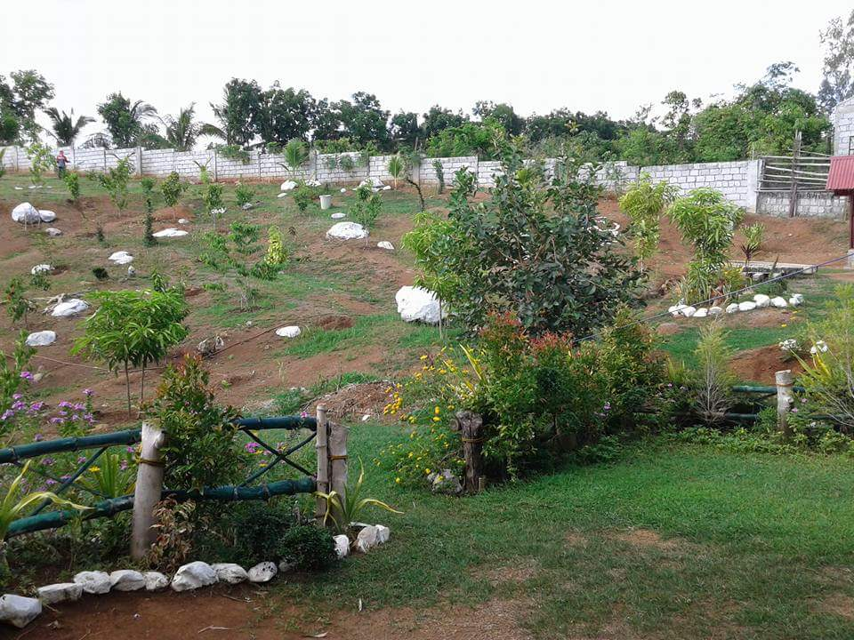
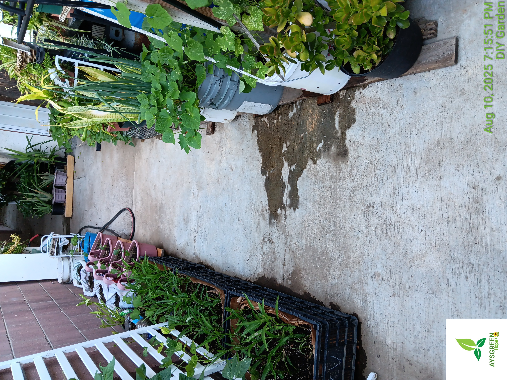
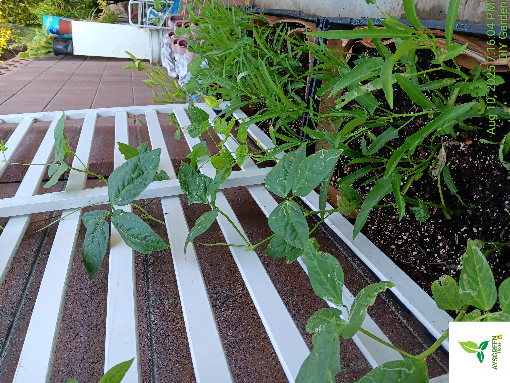
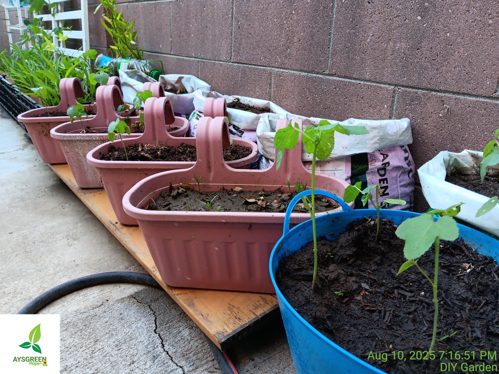
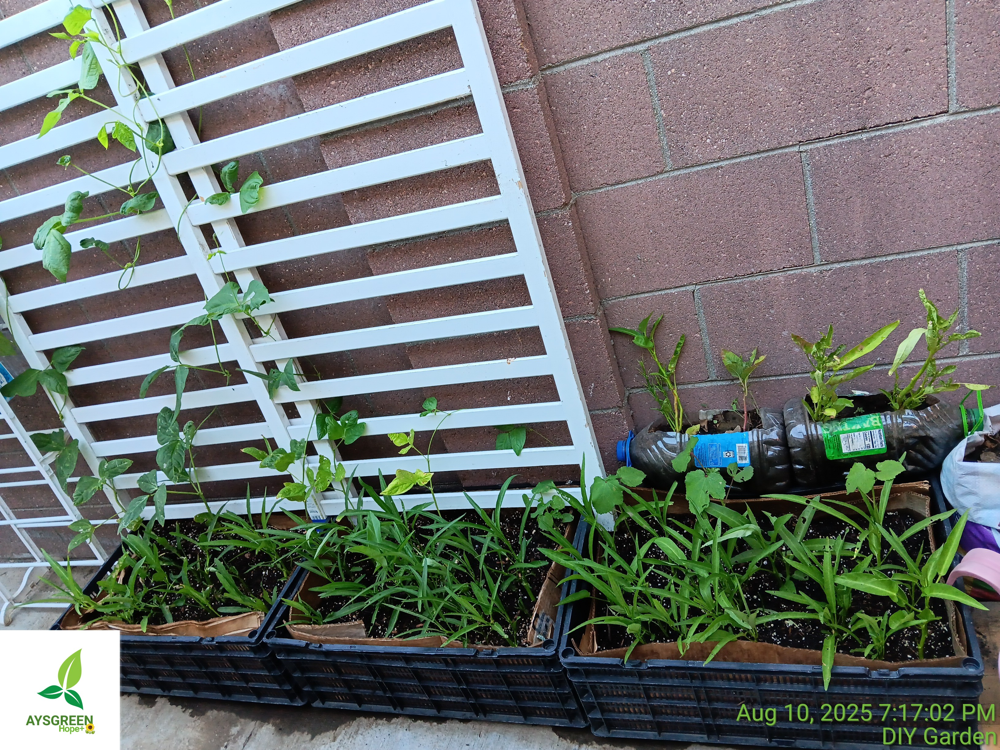
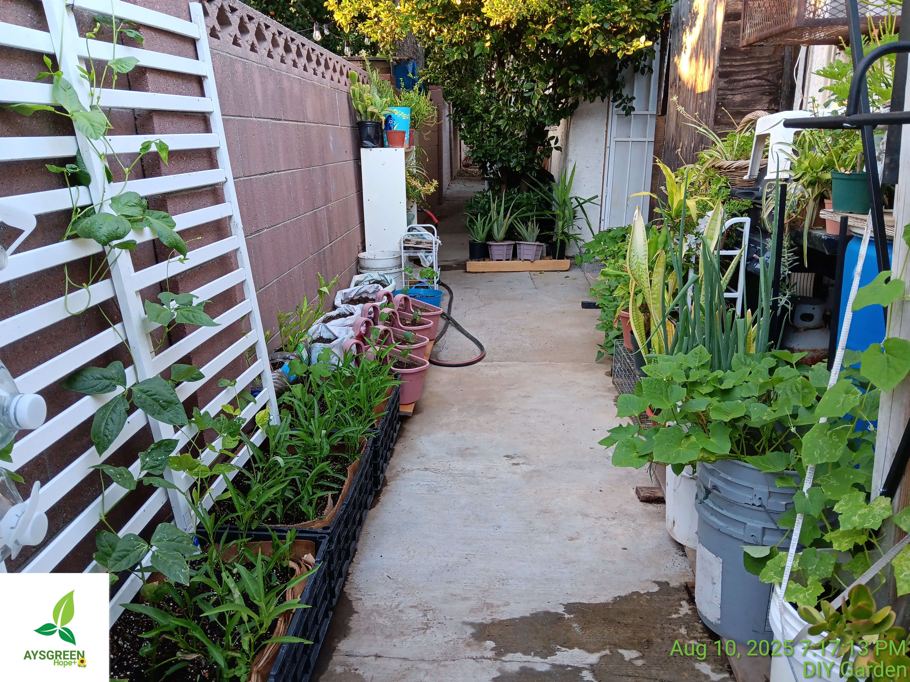
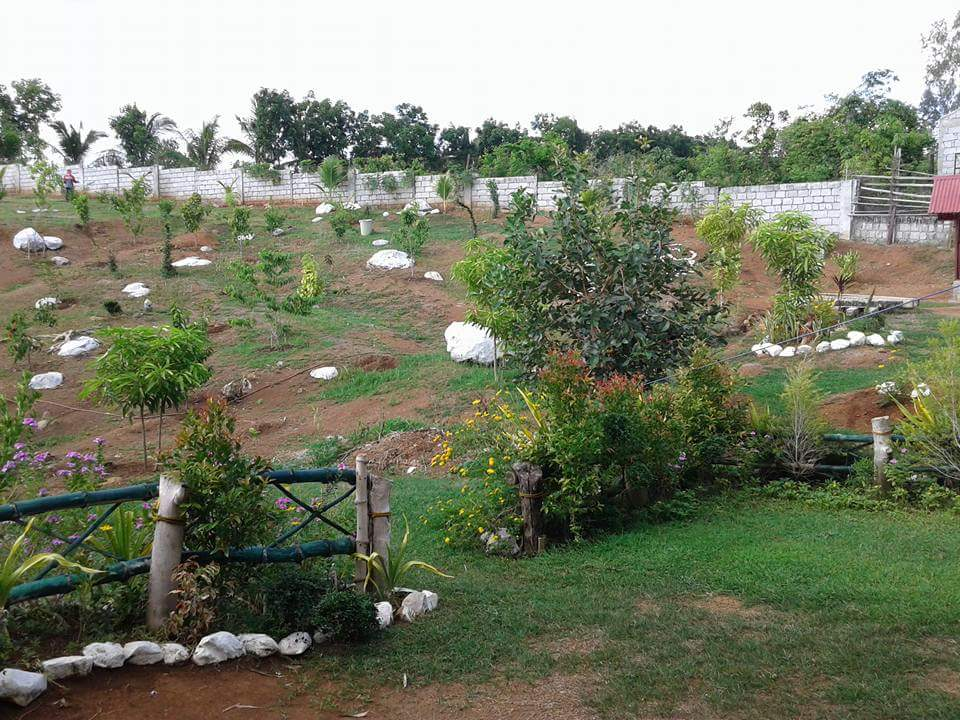
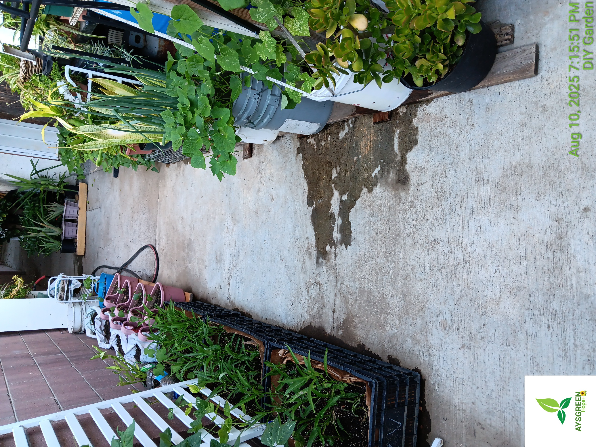
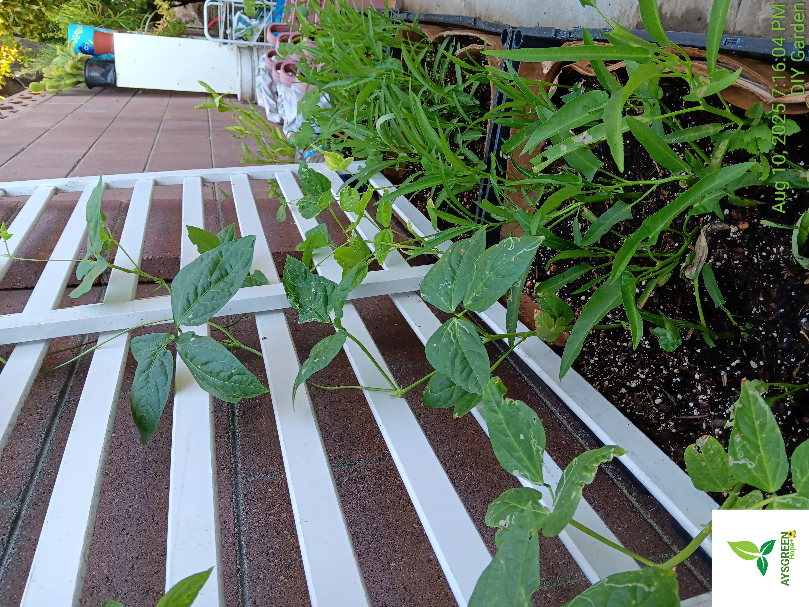
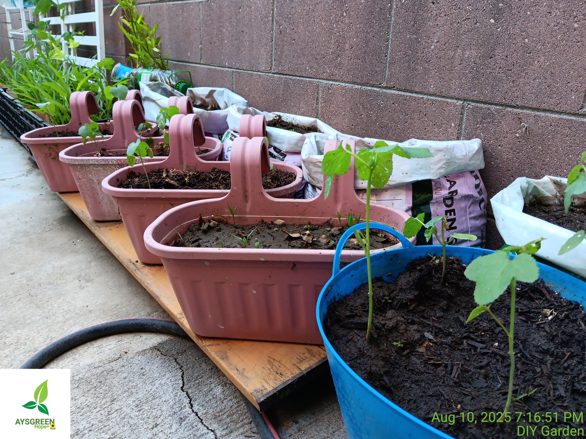
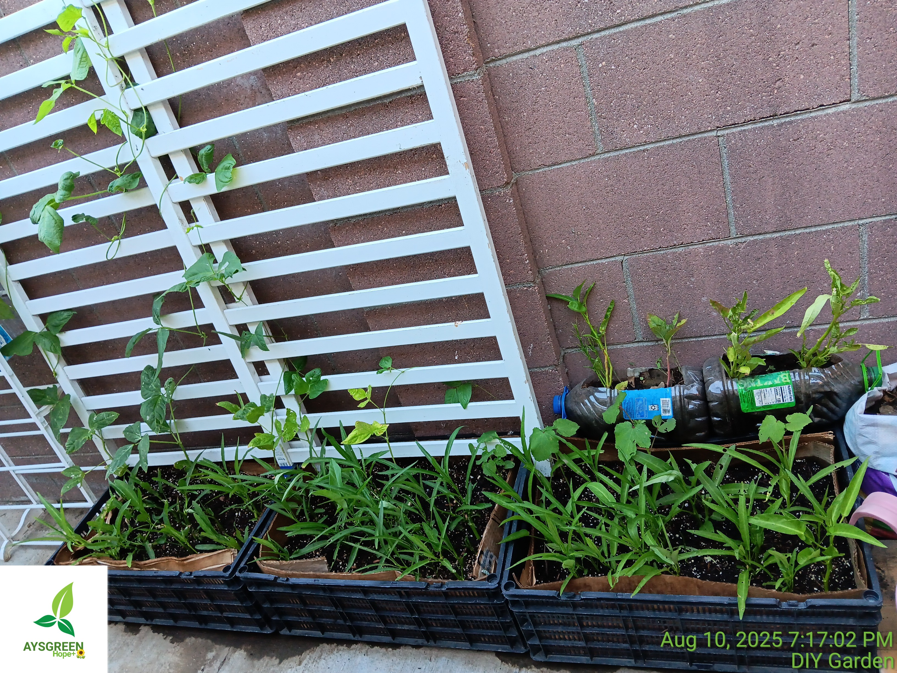
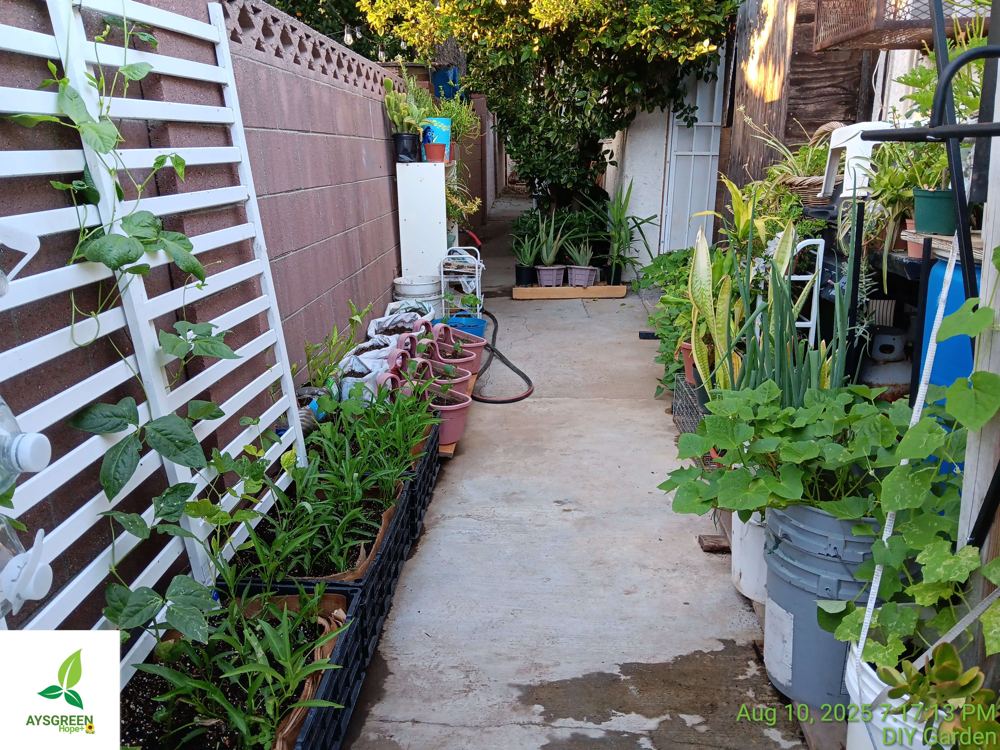

Tips on which crops thrive in each season. Read More
Understanding different plant varieties for better yields. Read More
How to create nutrient-rich soil from kitchen scraps. Read More
Let’s connect! Email me at kallyson08@gmail.com or reach out via my social media channels.